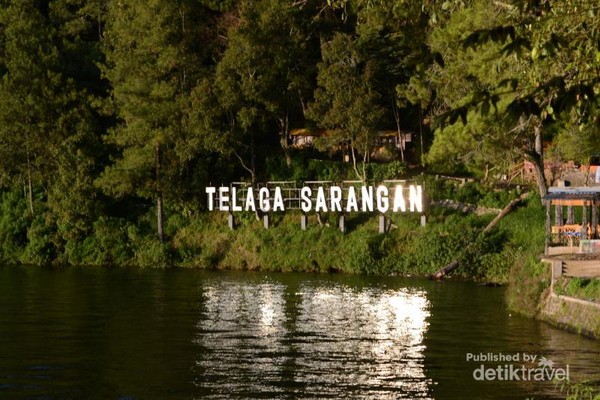
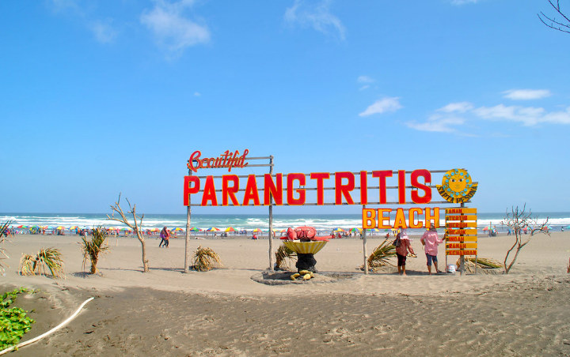

Telaga Sarangan, juga dikenal sebagai Telaga Pasir adalah telaga alami yang berada di ketinggian 1.200
meter di atas permukaan laut dan terletak di lereng Gunung Lawu,Kecamatan Plaosan, Kabupaten Magetan,
Jawa Timur.[1] Telaga ini berjarak sekitar 16 kilometer arah barat Kota Magetan. Telaga ini luasnya
sekitar 30 hektare dan berkedalaman 28 meter.Dengan suhu udara antara 15 hingga 20 derajat Celsius.
Telaga Sarangan mampu menarik ratusan ribu pengunjung setiap tahunnya. Telaga Sarangan adalah objek
wisata andalan Kabupaten Magetan Di sekeliling telaga terdapat dua hotel berbintang, 43 hotel kelas
melati, dan 18 pondok wisata.Di samping puluhan kios cendera mata,pengunjung dapat pula menikmati
indahnya Sarangan dengan berkuda mengitari telaga,atau mengendarai kapal cepat.Fasilitas objek wisata
lainnya pun tersedia,misalnya rumah makan, tempat bermain,pasar wisata,tempat parkir,tempat ibadah,dan
taman.
selanjutnya
 Pantai Parangtritis (Jawa: ꦥꦱꦶꦱꦶꦂ ꦥꦫꦁꦠꦿꦶꦠꦶꦱ꧀, translit. Pasisir Parangtritis) adalah tempat wisata yang terletak di Kalurahan Parangtritis, Kapanéwon Kretek, Kabupaten Bantul, Daerah Istimewa Yogyakarta. Jaraknya kurang lebih 27 km dari pusat kota. Pantai ini menjadi salah satu destinasi wisata terkenal di Yogyakarta dan telah menjadi ikon pariwisata di Yogyakarta. Pantai ini mempunyai nilai simbolis yang merupakan garis yang bersifat magis yang menghubungkan Panggung Krapyak, Keraton Yogyakarta, Tugu Yogyakarta dan Gunung Merapi yang dikenal sebagai Garis Imajiner Yogyakarta. selanjutnya kembali keatas